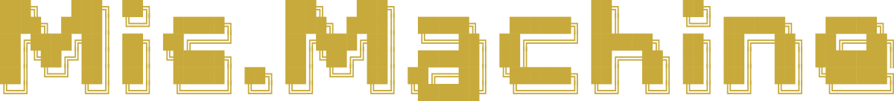
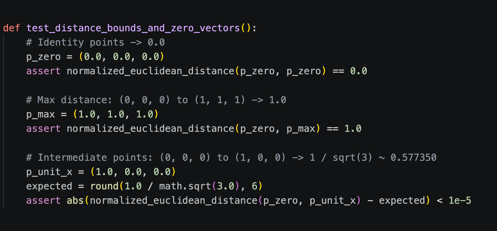
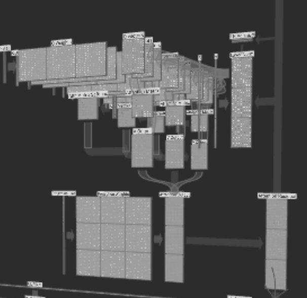

Introduction
Perhaps sorrowful, perhaps sincere, perhaps distant and lingering. When flat, two-dimensional text strips away the world of the human voice, how much meaning do we have left?
Instagram and X have become markers of identity. Across countless platforms, people adopt all kinds of names and construct entirely different versions of themselves.
Personas multiply, and people put on masks.
communication, only to reconstruct it.
Language begins to drift, while meaning and truth seem to slip beyond our control.
“The medium is the message.”
Long before the internet became part of our everyday lives, Marshall McLuhan had already recognized this phenomenon.
Music is my language, and I refuse to remain confined within this ward of broken communication.
////////////////////////////////////////////////////////////
In this project, I attempt to use music as a medium of communication, exploring how meaning shifts, how distortion emerges, and how people gradually lose the ability to understand one another.
First, the text is fed into a language model that I trained myself. Through training, the model learns to translate a piece of text into a four-dimensional representation consisting of Valence, Arousal, Dominance, and Confidence (VADC).
Through computational mappings and combinations of these four dimensions, the text is translated into musical parameters such as frequency, timbre, and amplitude. Using VCV Rack, these parameters are transformed into a piece of generative ambient music.
And so, our language is deconstructed, then reconstructed.
Until, finally, it is heard by someone else.
Rex@Machine:~/Amfm $ Tail -F Model.Log
// live backend events · auto-follow at bottom
[connect] checking Windows model backend…
System.Status
SESSION

Stdin Text Input
Model.Process Transformer / VADC


[ready] waiting for a live model job